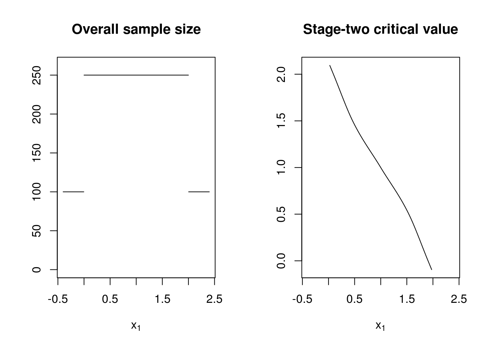
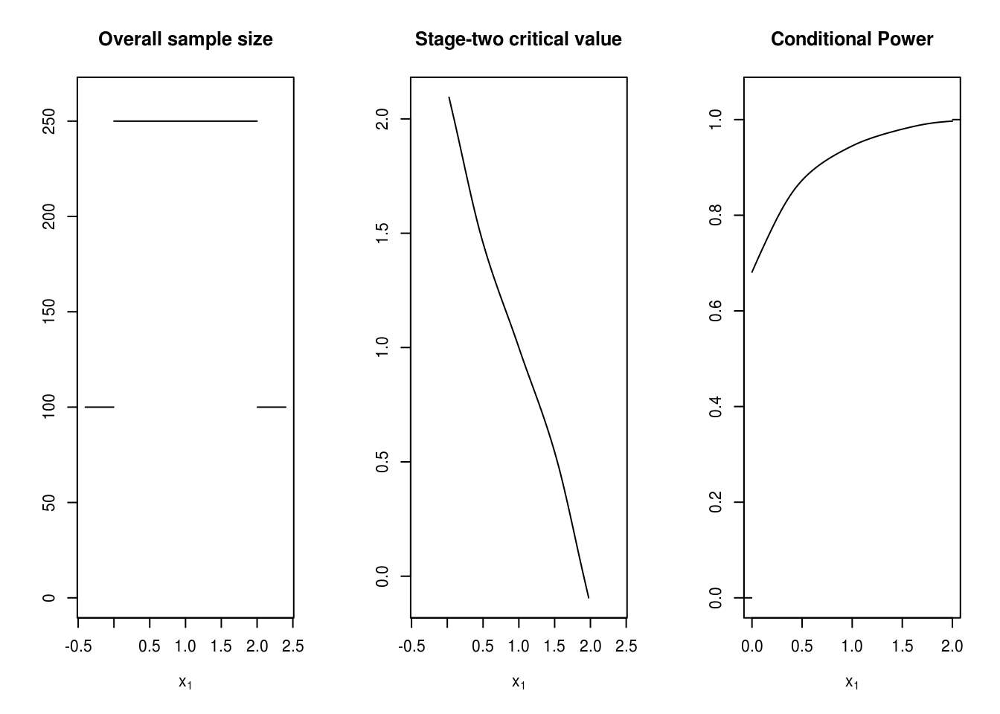

vignettes/score-and-constraints-arithmetic.Rmd
score-and-constraints-arithmetic.Rmdadoptr
In adoptr there are two custom score classes. Conditional scores represented by the class ConditionalScore and unconditional scores which are currently implemented as expected conditional scores and therefore represented by the class IntegralScore.
A conditional score is the evaluation of a design property conditioned on the first-stage outcome \(X_1 = x_1\).
In adoptr, a conditional score as, e.g. conditional power, includes the following slots:
distribution: the underlying data distribution.
prior: the prior distribution.
The only data distribution that is currently supported is Normal(). One can differentiate between two-armed designs (the default) and one-armed designs. It can easily be called by
The prior distribution is needed here to be able to compute the posterior distribution and evaluate the conditional score in case of continuation. How to work and specify priors is described more detailed in the vignette ‘working with priors’.
Every conditional score requires an evaluation method. This has to be defined as a method of three arguments.
the object of class ConditionalScore that is to be evaluated
the TwoStageDesign used of evaluation
the realisation of the test statistic \(z_1\) where the score is evaluated.
Later in this vignette it is shown how one can define an own evaluation method. For the common cases conditional sample size and conditional power such methods already exist in adoptr as will be shown below.
Unconditional scores are scores that do not depend on a specific value of the first-stage statistic \(X_1\).
In adoptr an unconditional score is an expected conditional score. I.e., integrating the product of a conditional score and the probability density function of the test statistic over the full \(x_1\)-range yields to an unconditional score. For instance, power is nothing but the integral over conditional power multiplied by the density function of the test statistic. Therefore, the proposed class of an unconditional score is the class IntegralScore. The following ‘formula’ expresses the connection between the two score classes in adoptr for a design \(D\). \[
\text{IntegralScore} (D) = \int_{-\infty}^{\infty} \text{ConditionalScore}(x_1, D) *
\text{TestStatisticDensity} (x_1) \operatorname{d} x_1.
\]
Creating an IntegralScore only requires a conditional score. Via the method expected() an IntegralScore is built. The evaluation method is then adopted by the underlying ConditionalScore.
There are two common unconditional scores that are already implemented in adoptr. These are the conditional sample size and the conditional power. Its usage is described now. For illustration a TwoStageDesign has to be defined.
design <- TwoStageDesign(
n1 = 100,
c1f = .0,
c1e = 2.0,
n2_pivots = rep(150, 5),
c2_pivots = seq(2.0, 0.0, length.out = 5)
)A brief look on this design shows that a classical group-sequential design has been defined

The conditional sample size is the sample size of a design conditioned on observing the first-stage result \(X_1 = x_1\). Therefore, it is just the total sample size \(n(x_1) = n_1 + n_2(x_1)\). As described above, a data distribution and a prior have to be defined.
It can be defined via
For our dummy design the conditional sample size at \(x_1 = 1\) can be evaluated via
The corresponding unconditional score is the expected sample size. It can be defined by calling expected():
The call of evaluate() allows to evaluate the expected sample size of a two-stage design. Note that ess is a unconditional score and therefore, no \(x_1\)-outcome can be specified.
Another common used conditional score in the development of adaptive designs is the conditional power. It is defined as the probability to reject the null hypothesis at interim if \(X_1 = x_1\) was observed. For a design \(D\) it is defined as. \[ \text{Conditional Power }(x_1, D) = P[\text{Reject } \mathcal{H}_0 \, | \, X_1 = x_1] \]
Analogously to the conditional sample size it can be called and evaluate by the adoptr-internal definitions.
The power is than defined as the probability under the alternative (here this is \(\delta = 0.3\) as defined by the prior) to reject the null hypothesis. As before one can simply call:
Finally note that the type one error rate is the probability to reject the null hypothesis under the null. Therefore, it can be interpreted as conditional power under the null hypothesis and be defined as the power above where only the prior has to be changed.
Conditional scores can be implemented in the plot() method of adoptr in the following manner. Note that the term `cp``has already been defined above as conditional power.

adoptr provides to add and multiply scores with scores as well as scores with constants. For instance, one can evaluate the sum of twice type one error rate and power via
Note that this only works for scores of the same kind. I.e., one can not add conditional power (a ConditionalScore) and unconditional power (an IntegralScore) because the former requires a \(x_1\)-value to evaluate and the latter does not.
To compute optimal designs scores will be used as objective criteria. However, one may also use them as inequalities. For instance, power and type one error rate inequalities may be used very often in the development of optimal two-stage designs. They can be included easily because adoptr provides the following possibilites
Score <= / >= constant
Constant <= / >= Score
Score <= / >= Score
Have a look at some examples. Keep in mind that the used scores and the dummy design have already been defined above in this vignette.